智能无人系统
第一章 认识无人驾驶系统
1. 无人驾驶分级标准

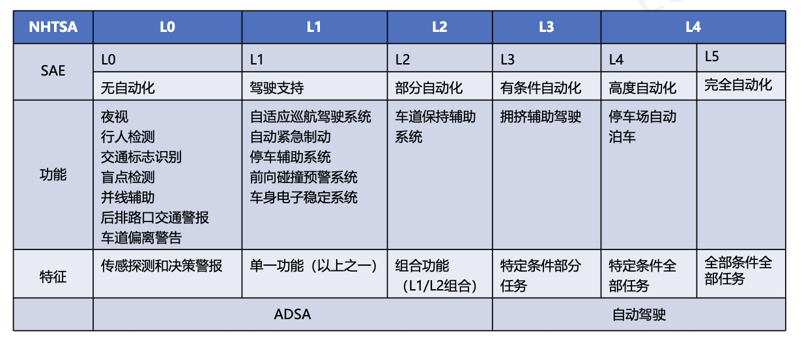
2. 无人驾驶系统框架

第二章：定位方法以及传感器应用
章节核心逻辑：无人驾驶系统如何解决两个终极问题？
- “感官”：用传感器感知周围环境（雷达、相机）。
- “大脑”：用算法（定位、滤波）确定自己在哪、状态如何。
SLAN：同步定位与地图构建。主要有：激光SLAN & 视觉SLAN
第一部分：硬件传感器
1. 激光雷达（激光SLAN）
- 原理：飞行时间法 (ToF)。发射激光束，计算往返时间测距。
- 公式：$r = \frac{1}{2} c t$
- 特性：
- 3D激光雷达采集到的信息叫做点云。将点云与全局地图进行迭代匹配（ICP）
- ✅ 精度极高，测距远，分辨率高，隐蔽性好，抗干扰能力强
- ❌ 成本高，易受雨雪雾天气干扰（噪声大）
- 考点：它是L4/L5级自动驾驶的核心传感器。
2. 摄像头
- 原理：被动接收环境光。
- 分类与应用 (🎯 学长考题重点)：
- 单目 (Monocular)：前视感知，识别人、车、车道线、红绿灯。
- 双目 (Stereo)：通过视差原理测距。
- 鱼眼 (Fisheye)：视野极大 (>180°)，专门用于倒车影像、360°环视（图像有畸变）。
- 特性：
- ✅ 纹理信息丰富，便宜。
- ❌ 受光照影响大（逆光、黑夜致盲），测距精度不如雷达。
3. 毫米波雷达
- 原理：多普勒效应。
- 特性：
- ✅ 穿透力强（无视雨雪雾），测速特别准。
- ❌ 分辨率低（看不清物体轮廓，只能知道“有东西”）。
第二部分：定位算法
1. 激光SLAN：ICP vs NDT (⭐⭐⭐ 必考对比)
（1）ICP：
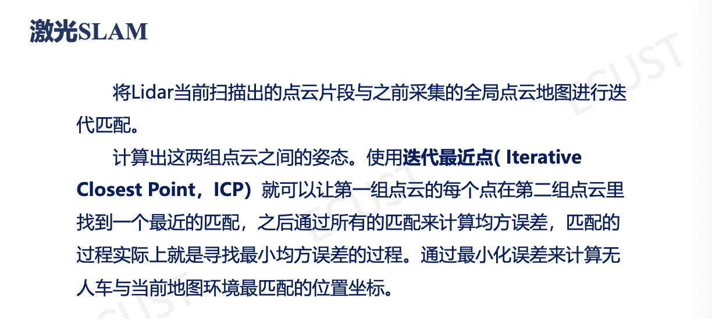
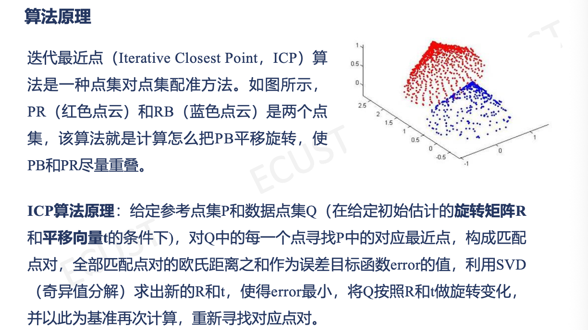
| 优点 | 缺点 |
|---|---|
| 效果精确 | 耗时大，效率低 |
| 不必数据处理 | 可能陷入局部最优 |
| 较好收敛性 | 需要噪声处理 |
（2）NDT：
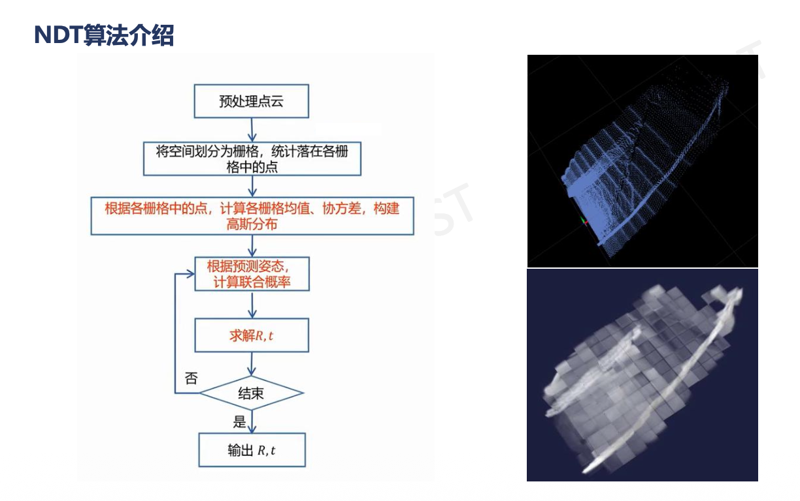
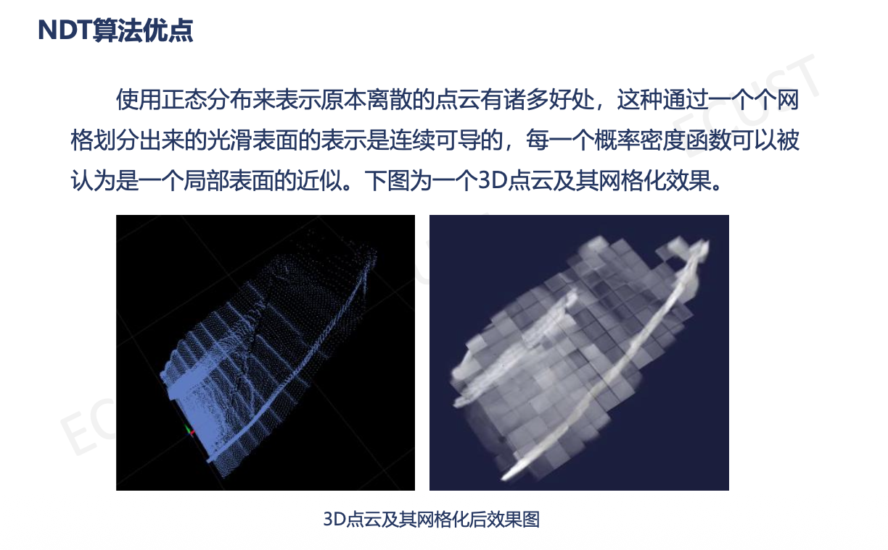
总结：
把“刚才看到的”（实时点云）和“记忆中的”（高精地图）拼在一起。
| 特性 | ICP (迭代最近点) | NDT (正态分布变换) |
|---|---|---|
| 通俗理解 | 硬碰硬。每个点都去找地图上离它最近的点，强行拉近。 | 概率流。把地图划成格子，看现在的点落在哪个概率最高的格子里。 |
| 核心原理 | 最小化点对点欧氏距离。 | 计算网格内的高斯概率密度函数 (PDF)。 |
| 优点 | 精度极高（前提是初值给得好）。 | 速度快，鲁棒性强（容错率高，初值差一点也能对上）。 |
| 缺点 | 慢，容易拼错（陷入局部最优）。 | 精度略逊于精细的ICP。 |
2. 视觉SLAM
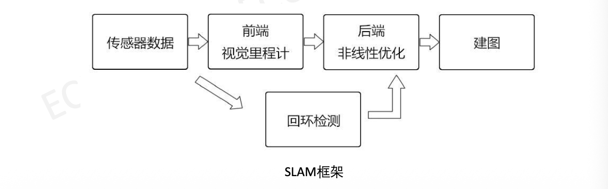
- 视觉前端特征 (🎯 填空题重点)：
- 角点 (Corner)：如 Harris, FAST。
- 斑点 (Blob)：如 SIFT（最准最慢）。
- ORB特征：Oriented FAST (带方向角点) + BRIEF (二进制描述子)。速度极快，适合实时系统。
- 回环检测 (Loop Closure)：
- 利用词袋模型 (BoW) 判断“我是否来过这里”，消除累积误差。
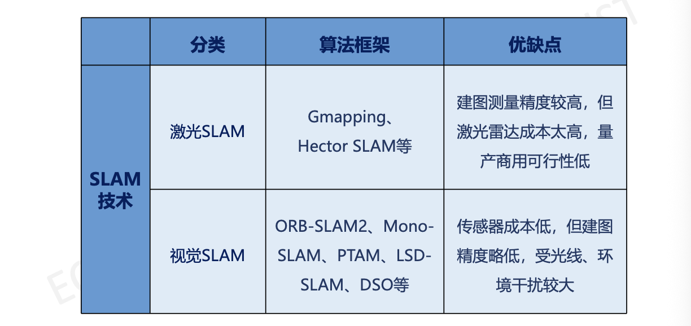
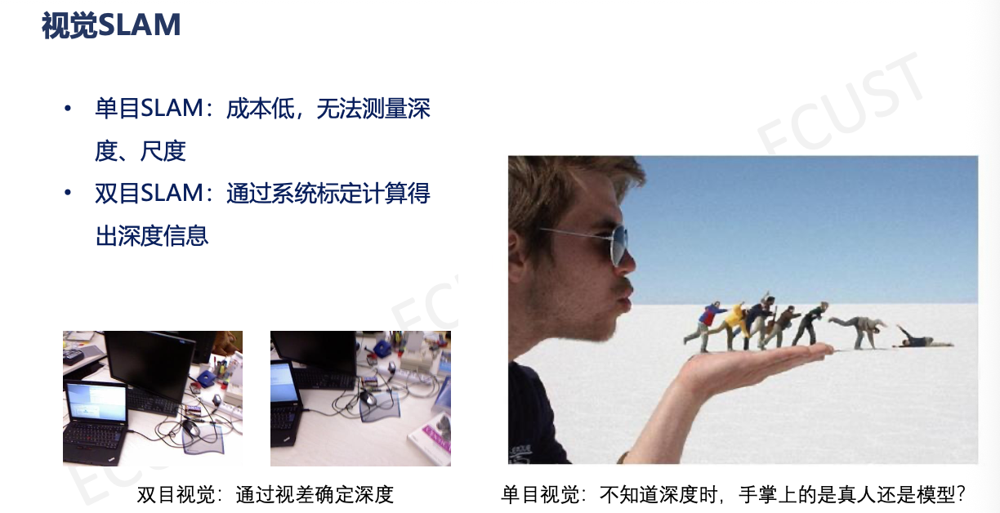
第三部分：定位系统
1. 坐标系转换 (⚠️ 判断题陷阱)
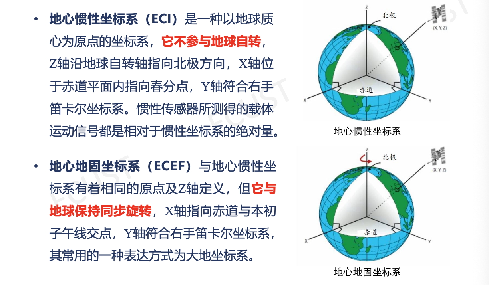
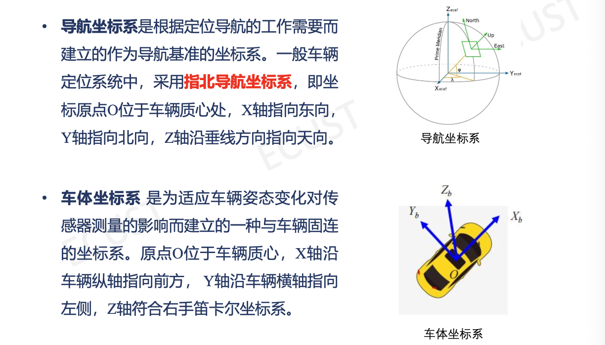
- 转换链条：
GPS输出的经纬度信息$\rightarrow$ECEF (地心地固)$\rightarrow$导航坐标系 (ENU/NED)$\rightarrow$车体坐标系 (Body) - 关键点：
- ENU：东北天坐标系（指北坐标系）。
- ECEF：随地球自转。
- 考题避坑：通常不能直接从 ECEF 旋转得到车体坐标系，中间必须经过局部切平面（导航坐标系），否则无法描述“东南西北”。
2. 基于GPS +惯性组合（IMU）导航的定位系统
（1）GPS：

- RTK：载波相位动态实时差分，定位误差在城市中也可达到10～50m（一般GPS为10～100m）
- 差分GPS定位：通过在一个精确的已知位置（基准站）上安装GPS监测接收机，计算得到基准站与GPS卫星的距离，然后再根据误差修正结果，从而提高了定位精度。
- 伪距法定位：
- 优点：速度快、无多值性问题、虽然精度低，但是满足大部分需求。
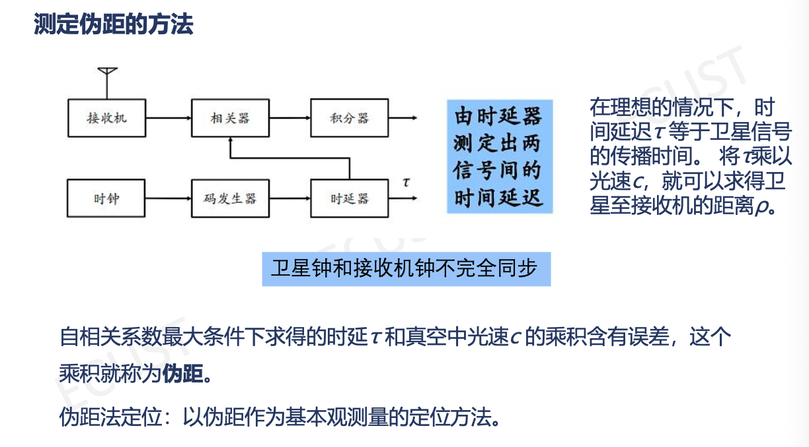
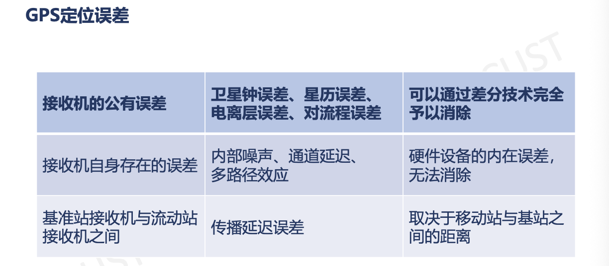
（2）惯性测量单元：
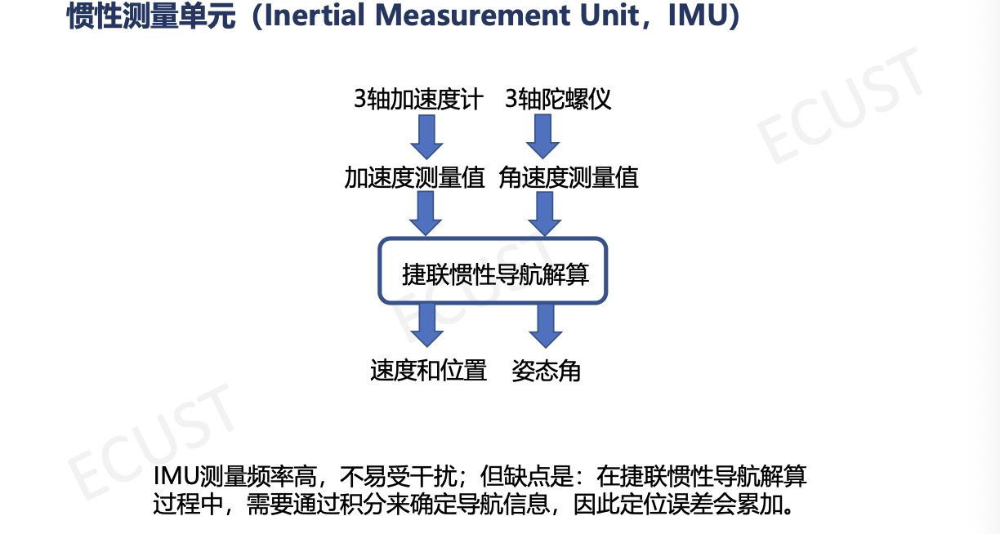
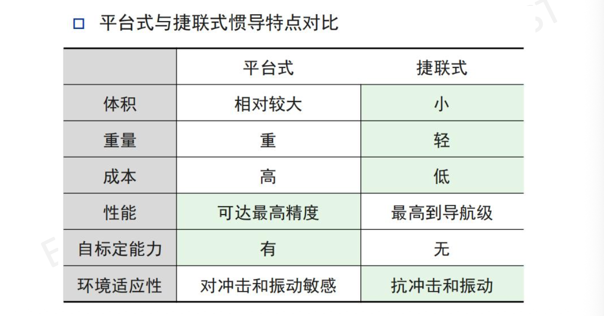
总结：
- GPS (全球定位系统)：提供绝对位置。
- 缺点：更新慢 (10Hz)，易被遮挡（隧道、高楼峡谷）。
- RTK技术：利用基准站差分，将精度提升至厘米级。
- IMU (惯性测量单元)：提供相对推算。
- 组成：加速度计（测比力/加速度）+ 陀螺仪（测角速度）。
- 原理：航位推算。
- 缺点：误差随时间累积（积分漂移）。
- 融合逻辑：GPS负责“纠偏”（消除累计误差），IMU负责“填空”（高频输出，保证信号不断）。
（3）惯性导航系统（INS）：
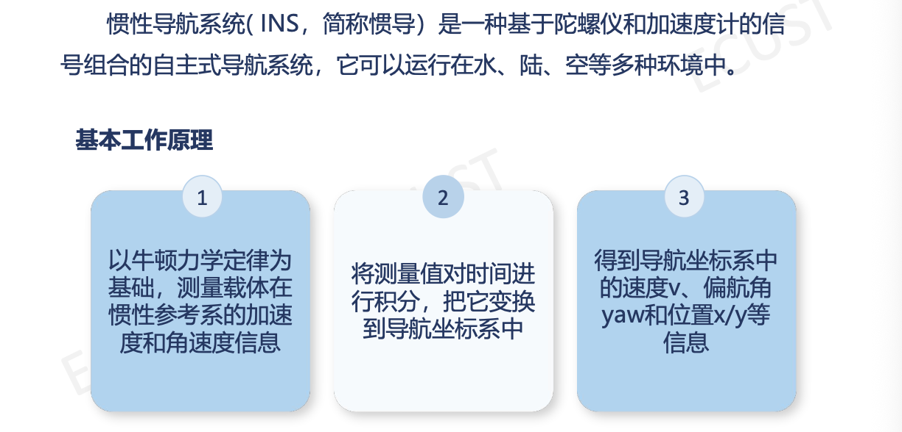
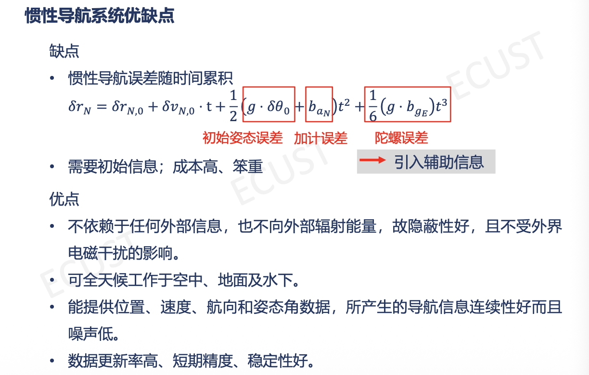
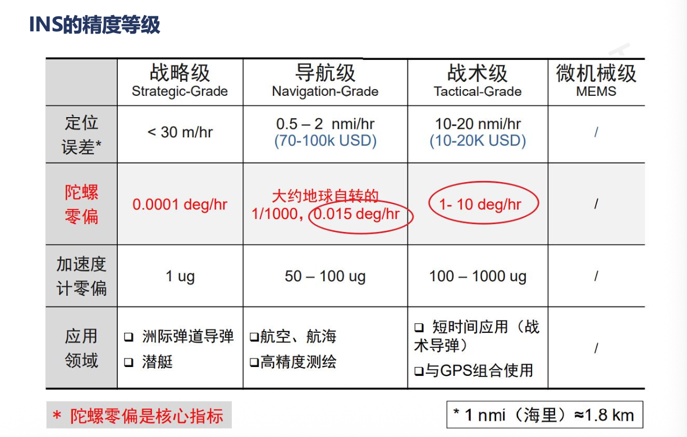
第四部分：卡尔曼滤波
这一部分数学最难，重点掌握逻辑和公式。
- 卡尔曼滤波：是一种利用线性系统状态方程，通过系统输入输出观测数据，对系统状态进行最优估计的算法。
- 基本思想：利用
前一时刻的估计值和现时刻的观测值来更新对状态变量的估计，求出现在时刻的估计值。
1. 卡尔曼滤波 (KF) —— 线性系统的最优估计
- 核心逻辑：加权平均。
- 模型算出一个值（预测），传感器测出一个值（测量）。
- 谁方差小（谁靠谱），我就信谁多一点。
- 五大核心公式 (📝 建议默写)：
- 预测状态：$\hat{x}k^- = A \hat{x}{k-1} + B u_k$
- 预测协方差：$Pk^- = A P{k-1} A^T + Q$ (Q: 模型噪声)
- 卡尔曼增益：$K_k = P_k^- H^T (H P_k^- H^T + R)^{-1}$ (R: 测量噪声)
- 理解：$R$ 越大（测量烂），$K$ 越小（不信测量）；$Q$ 越大（模型烂），$K$ 越大（信测量）。
- 状态更新：$\hat{x}_k = \hat{x}_k^- + K_k (z_k - H \hat{x}_k^-)$
- 协方差更新：$P_k = (I - K_k H) P_k^-$
| 局限性 |
|---|
| 实时性不能满足 |
| 可靠性降低 |
| 对于非线性系统效果不佳 |
2. 进阶滤波：EKF vs UKF (⭐⭐ 简答题)
解决非线性问题（如车在转弯、雷达测距是弧线）。
- 扩展卡尔曼滤波 (EKF)：
- 方法：线性化:用线性变换近似非线性变换。用泰勒级数展开（保留一阶导数），算出雅可比矩阵 (Jacobian)。
- 缺点：雅可比矩阵难算，忽略高阶项有精度损失。
- 考点：EKF近似的是非线性函数本身。
- 无损卡尔曼滤波 (UKF)：
- 方法：无损变换。选几个代表点（Sigma Points）去通过非线性函数，近似出新的概率分布。
- 优点：不用算雅可比，精度通常更高。
3. 运动模型
- CTRV (Constant Turn Rate and Velocity)：恒定转弯率和速度。这是描述车辆运动最常用的模型。
4. 传感器融合架构
- 顺序滤波 (Sequential Filtering)：
- 逻辑：一次预测，多次更新。
- 场景：激光雷达和毫米波雷达的数据不同时到达。先用激光更新卡尔曼滤波，结果作为初值，马上再用毫米波更新。
📝 考前抢分 CheckList (必背)
- 倒车影像用什么镜头？ $\rightarrow$ 鱼眼 (Fisheye)
- 指北坐标系通常指什么？ $\rightarrow$ ENU (东北天)
- ICP和NDT谁更快更鲁棒？ $\rightarrow$ NDT
- EKF的核心数学操作是什么？ $\rightarrow$ 泰勒展开 / 计算雅可比矩阵
- SLAM常用视觉特征？ $\rightarrow$ ORB, SIFT, 角点
- 卡尔曼增益K变大说明什么？ $\rightarrow$ 说明更相信测量值 (或者模型预测的不确定性Q变大了)。
本博客所有文章除特别声明外，均采用 CC BY-NC-SA 4.0 许可协议。转载请注明来源 WENTAO's Blog！
评论